Until I get the chance to write about the UK, Ireland is probably the closest I'll get to a similar market. It acts as, if not a sister, then at least a cousin. Many aspects sound uncannily familiar, albeit with a bit of a lilt. The nation similarly reflects the general fetishisation of home ownership, promotes ambitious housing targets that never get met, and presents a general distrust and demonisation of landlords. They also have a scheme called Help to Buy (although it stands for something totally different) as well as a penchant for pebbledash that seems to draw our shared grey skies down to street level and drown us in an earth-coloured sludge. Indeed, this weather feels like a mutual blessing/burden that defines how our housing stock looks (and leaks). But I'd admit that Ireland admittedly gets a rawer deal, bearing the brunt of the Atlantic with a force I don't think we would handle too well in Britain.
Leaving that aside, Ireland also comes with a unique character rooted in its geographic position, smaller population, and, most notably, its response to economic turmoil and subsequent corporate tax incentives that turned it into a global tech hub. Few things provide more relief from stewing in our own problems than hearing about someone else's. So, with that in mind, let's dive head first into the deep end of what makes Ireland's housing unique: the absolute shambles of its housing availability.


Crisis? Which Crisis?
Ireland provides a compelling market because of its iconic positioning as suffering from one of the worst housing crises across all high income nations in the world. I'd argue that Dublin has rooted itself in the public imagination as one of the four horsemen of the housing affordability apocalypse, bringing doom to all in the search for reasonably priced accommodation. It presents a distinct flavour of crisis: one rooted in the mismatch between tech and pharma wealth generated from its favourable corporation tax policies compared to low average local wages.
Large US multinationals route their profits through Ireland, leading to the distortion of an artificially inflated GDP per capita to the heights of places like Monaco, Liechtenstein, and Luxembourg. Despite favourable tax rates, the presence of these businesses still leads to huge corporation tax receipts which result in a substantial budget surplus. The main drag instead is capacity, be it labour, planning, or infrastructure, to provide enough homes. The government therefore can't just spend its way out of the issue, for fear of provoking rampant inflation in an economy with a low unemployment rate. This makes an unbelievably bizarre situation and fascinating market to delve into.
Before we do, who are the other horsemen I hear you wonder? I'm open to opinions, but my own suggestions that cover the breadth and depth of global housing strife would be: Hong Kong for generally having the highest real estate prices in the world due to constrained land availability, leading to the infamous existence of 'cage/coffin homes.' Sydney is up there as well, with the second highest median home price to household income ratio of 13.8x in the world, after Hong Kong at 16.7x (London is a meagre 8.1x in comparison, this data comes from Forbes 2026). Here the market has been impacted by the quirky Australian policy of negative gearing and generous capital gains discounts, where running an investment property at an ostensible loss enables buyers to reduce their overall tax bill. The final one I'd give to Vancouver for the Americas' representative, which is in third place for the highest house price to income ratio of 11.8x. This flavour of the crisis is driven by the decoupling of house prices from local wages through international capital flight which treated its market as a safe haven, as well as by money launderers that took advantage of lax regulations. Isn't it nice to have such variety?
In all these markets property listings have a habit of going viral, laying bare the absurdities of prices and a lack of value for money that leaves you feeling both a mixture of laughter and despair. I remember reading with equal measure of amusement and horror the Vice news' 'London Property Listing of the Week' supplement for similar content. This explored the litany of delightful features evident in contemporary property listings such as showers in kitchens, sheds converted into 'studios', or absurd demands like bans on cooking hot food, all for very high prices. This circus of 'affordability porn', as one might dub it, has become a global phenomenon. From the social media account of Purple Pingers which reviews so-called 'Shit Rentals' in Australia to SFist's regular column of 'apartment sadness' that exposes craigslist ads for rentals in the San Francisco Bay Area, the dystopian realities of modern urban real estate markets are revealed to span continents. For Ireland, the source of such scandalous listings is Daft.ie, the country's primary property portal that has featured delights including a bed in a shed or sharing a double bed with an existing tenant.


So how did Dublin, and indeed Ireland, get to this position? Like with many contemporary crises around the world, Ireland's housing woes have their origins in the 2008 Global Financial Crisis. This brought an end to the so-called 'Celtic Tiger' economic boom which began in the 1990s. Easy bank credit, tax incentives, scant regard for building standards and massive speculation led to house prices more than doubling and a massive oversupply of new homes. When the bubble burst the housing market was essentially wiped out. While in the UK house prices fell by -20%, in Ireland house prices fell by -55% and flats by -65%.
Activity also essentially stopped. While in the UK at least some people were looking to buy in the post-crash period, in Ireland the story was different. Mortgage drawdowns fell from 110,000 in 2006 to just 25,000 in 2009. On top of this, domestic energy connections (a proxy for new build home completion before 2011) fell from 93,000 to just over 8,000. Official figures put delivery below 5,000.
The housing collapse in Ireland feels a bit like what the banking crisis was to Iceland: a state-defining event which fundamentally reshaped the country's public finances, politics, and demographics. In 2009 the government established the National Asset Management Agency (NAMA), which acquired the non-performing loans and distressed properties from Ireland's commercial banks at a deep discount in order to prevent the collapse of the banking system. Its aim was to recover as much value as possible for the state. The selling of distressed assets from NAMA and other banks to international investment and private equity firms became dubbed the infamous 'vulture funds' which enforced collections, restructured debt, and resold the properties. Public and political backlash was inevitable as they aggressively pursued large profits while also operating tax-exempt corporate structures. It incentivised asset flipping over construction, leading to the structural failure of housing delivery that now befalls the country.
Funds which did seek to grow housing stock got their own pejorative moniker: cuckoo funds. Clearly no matter what you do, funds will always get a bad rep. These are large institutional investors who bulk buy entire new housing estates or apartment blocks in order to rent them out (otherwise known as Build to Rent in the UK). The cuckoo analogy in the context of housing is an interesting and seemingly multifaceted one. In Ireland it evokes notions of evil corporations usurping any available nest and pushing out those looking to buy by outbidding them. Meanwhile in the UK we have the act of cuckooing, where people take over a person's home and use it for exploitative or criminal purposes, like drug dealing. It's a provocative image that implies an obvious morality: the act of turfing out the rightful inhabitants in a parasitic takeover. In the case of Ireland it's probably a bit unfair, as these developments are some of the few that were actually built post 2008 at a time when domestic banks struggled to lend. But the frustration is understandable, as it undermines that fanatical obsession with home ownership that is so deeply ingrained in the English speaking world.
You see this also with the frustrations rising around 'Generation Rent' as the dream of homeownership has eroded. The proportion of private renters has increased from around 11% of the population in 2006 to 18% today. In Dublin around 60% of those under 35 privately rent. I have nothing against renting. There is a place for it in the market, and when you look at countries like Germany where it is the norm it can work well as long as it provides the stability, security, and affordability necessary to build a life. The issues always arise when people must privately rent out of necessity rather than intention, which is realistically the case in Ireland. This merely fuels the fire of rental inflation, as evident in the Daft.ie figures that rents in 2026 are 40% above pre-Covid levels and 75% above their Celtic Tiger peak.
The only other alternative is to stay at home for longer, a fact which is becoming more evident in the UK and quite frankly the whole of the developed world. The 2022 Census showed that 41% of 18-34 year olds still lived with their parents, up from 37% in 2016 and 32% in 2006. Of those that live at home and in work, 62% said it was primarily for financial reasons. It is little surprise then that apparently 3 in 5 of those under 25 are thinking of emigrating to seek a better quality of life. Whether or not they actually do is another question, but it does fuel the sentiment of a continued Irish diaspora that this time is driven by housing, as a generation becomes locked out of both home ownership and the rental market.
All this combined means that, in a lot of ways, Ireland (Dublin in particular) does have a strong claim for being one of the most dire housing markets in the so-called 'developed' world. Like elsewhere it isn't precipitated in a single crisis, but by the interactions between overlapping crises. The country's housing market was rocked, effectively obliterated, by an economic crisis which led to a housebuilding crisis. This in turn has facilitated an affordability crisis in both rental and homeownership, which I'm sure in turn will lead to a myriad of other labelled crises in future headlines: social, political, economic, and cultural. It is a crisis trifle of sorts, formed by distinct layers with their own flavour, that is blended up into an unholy mess.

But is it really that bad?
Dramatic food analogies aside, it is important to acknowledge that Ireland's claim to the crisis crown is weaker than things may first seem. Its issues are emblematic of wider problems faced elsewhere, and to more extreme extents. For a start, house price to income ratios are admittedly high, but no higher than, say, the UK. In 2024 in Ireland the ratio was 7.5x and 9x in Dublin. In contrast, in England the ratio was slightly higher at 7.8x and 11.1x in London. In some local authorities like St Albans or Epsom they are often over 15x.
The other key point is that once you have passed the initial deposit hurdle and bought a home, you are in a lot of ways set. Compared to the UK Ireland has much lower mortgage rates. As I write, a new fixed rate in Ireland is around 3.5% for 3 years compared to the UK where it is 5.6% for 2-5 years. They are also much slower to respond to broader market changes primarily because they are reliant on cash deposits for their funding rather than swap rates. This means mortgage rates are less connected to market caprices. There are also only three key pillar banks of AIB, Bank of Ireland, and Permanent TSB creating a form of oligopoly. As a relatively small and regulated nation, it isn't the obvious choice for lots of competition looking to enter. This combines to make rate changes generally slower and less volatile in the face of economic shocks, a fact which has insulated the country from the most recent global rate hike (at least compared to the UK).
Things have notably changed in more recent years, with a more competitive landscape provided by new players such as Avant Money, backed by the Spanish bank Bankinter and offering 30-year fixed rate mortgages, or fintech company Revolut which has announced it will soon offer mortgages. Mortgages are therefore likely to become more reactive to market changes, for better and worse depending on what happens to money markets.
But the key point is that, for now at least, the main crisis is within the almost insurmountable wall buyers must overcome to get on the property ladder rather than the whims of volatile interest rates. Those who can overcome the hurdle for a deposit are insulated by deposit-funded banks. Those who cannot are trapped in an unforgiving rental market or stuck living with parents. This all sounds painfully familiar, even if the exact circumstances are slightly different.
I think this is important because often we try to shine a favourable light on our own difficult situations by pointing out places which have it worse than us. We contort ourselves into a forced state of gratitude in a 'there but for the grace of God' attitude, considering ourselves the luckier ones. But in reality, we should be demanding more and better from our housing markets. So, with that in mind, how exactly has the Irish government attempted to tackle these problems and give more and better? Is there anything we can learn from their approach?
The grass isn't always greener (at least metaphorically)
The way Ireland has attempted to tackle many of its housing issues feels like a premonition. It is especially useful to consider as a proving ground and test case for policies that many in the UK have lobbied for. The outcomes act as interesting examples of why such well-meaning policies might not necessarily work, leading to unexpected and unintended consequences. In this way Ireland acts as a warning against the ease with which some promote simple fixes. This is especially evident in three key areas: rent controls, zoning laws, and ridiculously high housing targets.
The first is rent controls. In 2016 the Government introduced Rent Pressure Zones (RPZs) which designated areas if they met criteria for excessive rent level and inflation. Rent increases were initially capped at 4% per year, before being updated in 2021 to the lower of 2% or the rate of HICP inflation. Increases were also capped between tenancies meaning landlords couldn't adjust to market rates with the only exemptions being for circumstances like substantial refurbishments or rent setting after prolonged vacancies. This led to huge spikes in initial asking rents in order to mitigate future capped growth as well as an exodus of landlords, especially smaller scale ones. For example, in Q1 2026, there were a record 7,000 notices of landlord terminations, with 60% of them citing they were planning on selling the property. Supply also diminished significantly, with the country going from over 4,000 active rental listings up to 2019 to an all time low of just 700 homes in August 2022. These negative effects were emphatically highlighted in a 2025 study by the Economic and Social Research Institute found that while the RPZs were effective in controlling rent increase, they were also linked to reductions in supply, tenant mobility, and construction—the exact opposite to what a country with a housing crisis wants to happen.
Such interventions highlight the dangerous seduction of such controls which end up undermining the very ambitions they are trying to pursue. I totally get their appeal for people in the UK, I really do. I consider them constructive in only one way: they are a cry for help from people who are very legitimate in their anguish, being buffeted by economic forces beyond their control and unable to have the level of stability that housing is supposed to provide. But no matter where rent controls are applied in the private market, the same inevitable outcomes seem to occur. You even see it in, say, the caps housing associations had on putting up social rent. Yes, low rents give tenants more breathing room, but the ability for the organisations housing them to keep up with spiraling costs and reinvest in stock becomes dampened. Housing and the cities they provide for become static, unable to flow or develop in the ways people need. People are locked in and frozen out.
When the controls are lifted, there is often substantial whiplash and everything recalibrates, which is something we are seeing now the RPZs have been replaced. In March 2026 the new Residential Tenancies Act was implemented which is a nationwide rent control system that caps annual increases at 2% or at CPI (rather than HICP), whichever is lower. But new builds for this are exempt, and can increase every year with the aim of encouraging investment in construction. New lettings are also able to be set at market value as long as the tenant left voluntarily. For existing tenancies resets at market rate are also permitted every 6 years. Even though controls are still in place just in a different form, this led to rent in the first three months of 2026 growing by 4.4% according to Daft.ie, the largest quarterly increase since their index started in 2002. Regional cities saw particularly high annual increases: Galway and Cork up an eye watering 18% and 13% respectively, Limerick up a lower but still crazy 10%, while Dublin had an ostensibly modest 6.9%. As calls for rent controls pop up every now and then in the UK, Ireland provides a stark reminder of the potential can of worms that will be opened.


Zoning is another policy often touted to be a salve for the UK's planning woes, but again Ireland provides a warning sign to proceed with caution. The way it has been implemented has merely pushed uncertainty up and down the chain rather than eliminated it, meaning it still suffers from many of the issues inherent in our discretionary system where each planning proposal is judged on a case by case basis. The biggest stumbling block has been High Court Judicial Reviews brought about by local groups and campaigners. Land may be designated as residential but there clearly were still ways to resist it.
This was especially evident in the Strategic Housing Developments (SHDs) which fast-tracked large developments and bypassed local councils and went straight to An Bord Pleanála (the national planning board, renamed An Coimisiún Pleanála in 2025). The removal of democratic process meant that over 30% of all state-approved schemes were taken to court, delaying schemes for years. In 2021 these were replaced by Large-scale Residential Developments (LRDs) to restore decision-making powers back to local planning authorities and allowed the public to appeal. While the new scheme has been generally better received, it does mean that planning is more discretionary than it may seem even within a zoning system.
The final warning sign which the UK is already grappling with is setting ridiculously ambitious housing targets which it has little hope of meeting. On the one hand, modern targets better reflect genuine housing needs relative to the population. Most Local Plans across Ireland are based on the 2016 Census data, resulting in a significant demographic mismatch between calculated housing need and the reality of actual population growth. When the 2022 Census took place it was clear that the population had grown higher than the models based on 2016 predicted, meaning the targets significantly underprovided. This led to a substantial uplift to annual delivery targets in 2025 to 300,000 by 2030, or between 50,000-60,000 new homes a year. Before this targets and ad hoc promises from politicians were between 25,000 to 40,000.
The thing is, it will still take time for local councils to formulate exactly what these updated targets look like, by which time the underlying assumptions may once again be out of date. But that may be a redundant point anyway, as the 60,000 target requires essentially doubling the current output, with 36,000 delivered in 2025. In a country of 5.5 million people, this translates to over 10 homes per thousand people compared to 5 per thousand reflected in the 300,000 annual target in England. The sheer amount of materials and labour required to achieve this is staggering, a fact made harder by the general inefficiencies of importing into a relatively small country.
This reality undermines the current demand-led support schemes the Irish government have put in place to stimulate housebuilding. Ireland has two key policies. The Help to Buy scheme provides a tax refund of up to €30,000 for the deposit amount of a new home or self-build for first-time buyers, as long as the home cost €500,000 or less. The other key policy is the First Homes Scheme, which is confusingly what we would recognise as the Help to Buy scheme in the UK, which provides an equity loan of up to 30% of a new build home for first-time buyers (or 20% if used in conjunction with the Irish Help to Buy). The Central Bank and ESRI have both repeatedly warned that the schemes simply increase house prices rather than address the underlying issues of supply, a criticism that has also been levelled at the UK scheme. As with any ambitious housing targets, demand stimulus can only get you so far without increasing capacity for delivery and improving viability.
The policies of rent controls, zoning laws, and high housing targets in Ireland demonstrate there are no simple fixes, however seductive they might appear as policies. This is not to say that they can't be applied in a more nuanced way that leads to better outcomes, but that in Ireland they have merely made equally substantial problems pop up elsewhere like a perverse game of housing Whack-A-Mole. I look forward to exploring markets elsewhere where such policies may be more successful, especially rent controls which seem to generally have a negative impact on supply in the long term no matter where they are applied. Anyhow, let's move away from the abstract vagaries of the market and focus on something a little more concrete, quite literally. It's time to look at some pretty buildings.
Architectural preservation by accident
I like to test my prejudices with any market by imagining what I think the stereotypical home in that country would look like. Films are often to blame for our impressions, and I must confess that the image conjured in my mind isn't a million miles away from the home depicted in the Banshees of Inisherin. Although, I'm pleased to say in my own mind the image is much less austere and much more welcoming. Nevertheless, a simple standalone home or cottage in a striking landscape seems to be the overriding image of a google search for 'house in Ireland.'


It's always a humbling experience to compare that to the reality. Indeed, Ireland reflects the diversity of architecture you'd expect of any country where people actually live. It has its rural cottages and historical townhouses as well as its modern concrete blocks and bougie new developments. And within each of these types practical considerations undermine the romanticism often associated with them, from leaky old buildings to the modern pyrite scandal of poor quality concrete during the Celtic Tiger period. So, what do Ireland's homes actually look like?
There is admittedly a partial truth to the romantic vision of standalone houses and small developments. One of the more striking architectural features of Ireland compared to the UK is that between 10-20% of new homes are selfbuilds (vs the UK 7-10%). Many of these come from individuals building their own home or, say, farmers having a bit of land that they decide to build on. I'm a big proponent of self build, or at least self design where inhabitants get a much bigger say on the shape of the home they will live in. These small developments or one-off homes are incredibly common around the world, although many are accompanied by the global tradition of planning in a brown paper bag. Nevertheless, I think the UK's housing culture is impoverished by people having less of a say in the designs of our homes. In Ireland the normality of self-build is inherent in the fact that both the Help to Buy and First Home schemes explicitly mention it, as well as the high proportion of annual deliveries. Unfortunately I haven't spent much time exploring more rural areas where these are located, but I look forward to having the chance to do more in future.


Instead, Dublin is where I've explored the most. And the most striking thing for me about the architecture of the capital is the quantity and quality of Georgian era buildings all over town. They're incredible, replete in a wholeness of which London can only dream. The late 18th century was an era of prosperity and artistic expansion, with Dublin considered the 'second city' of the British Empire. Grand developments like Merrion Square and Fitzwilliam Square pop up in the same way the Bedford and Grosvenor Squares did in London. These neoclassical gems are hugely satisfying with their coherence, consistent rhythm of architectural features, and vibrant red bricks.
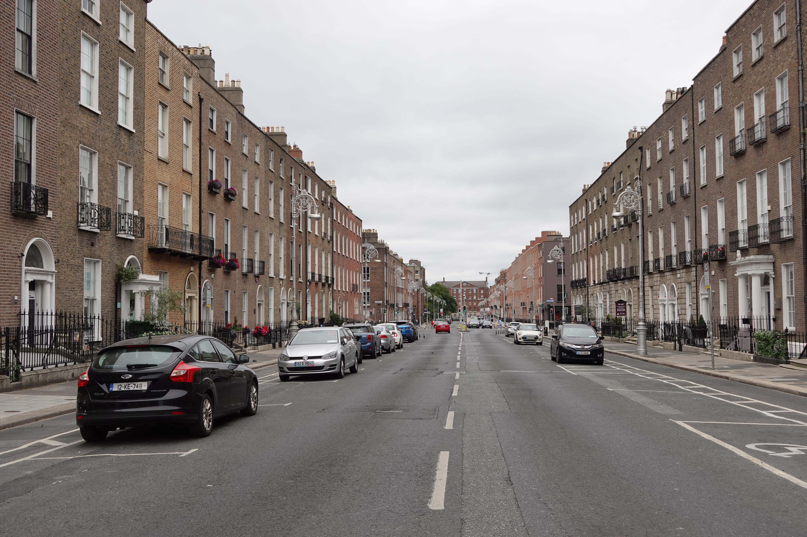
But unlike London, many of these buildings survived to the present day not through an intentional process, but more through preservation by neglect. The 1800 Act of Union saw Dublin lose its power, wealth, and independence as aristocrats and politicians moved to London, the new centre of influence. The old townhouses were subsequently transformed and subdivided into tenements, which in turn became overcrowded and centres of poverty during a period of economic malaise. Meanwhile, Victorian London got busy knocking down its Georgian streets to build modern railways hubs and commercial centers, feats which Dublin did not have the money for. Because of this many buildings were left untouched, the main threat being from falling into disrepair. That and, of course, Dublin was not blown to smithereens during the Second World War like London.
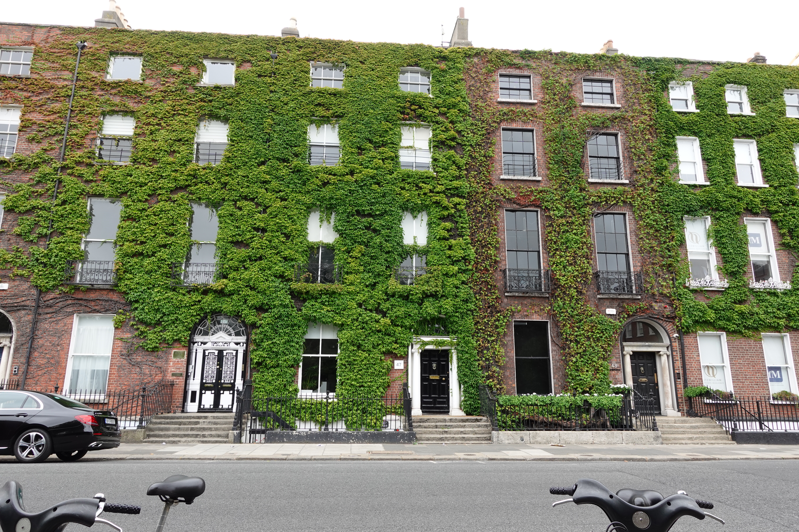
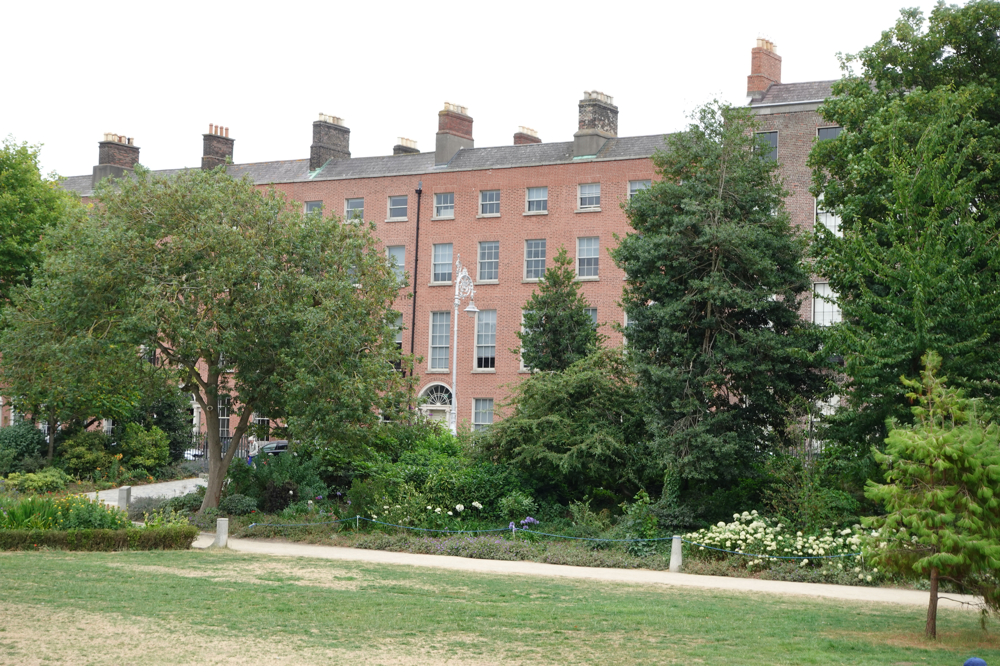
Instead, the main threat to this architectural heritage was the speculative developments of the 1960s and 70s, especially for modern office blocks. The most potent example was the controversial demolition of 16 Georgian houses on Fitzwilliam street by the Electricity Supply Board for its headquarters. At the time the street was the longest unbroken row of Georgian houses in Europe which became known as the 'Georgian Mile,' and the decision led to public protests. Tearing down old structures to create something new isn't necessarily a bad thing, and NIMBYism often hides behind thin facades to legitimise interests which have little to do with architectural preservation. But the office building that took its place was pretty crappy and unnecessary. It's nice to see this building was subsequently demolished for a new one which restored Georgian characteristics into the design without being pastiche. I do love how architecture today is far more considerate of its context than it used to be. It's an attitude that is making exquisite places.
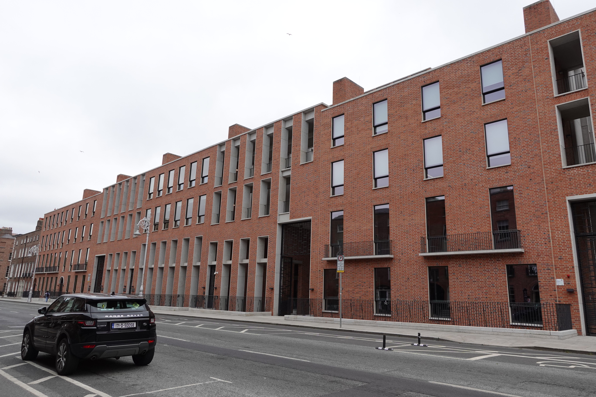
The demolition highlights another trend: the conversion of houses into commercial real estate. Today, a large proportion of these exquisite central Georgian townhouses are now offices, similar to a lot of places in London. I think this is a testament to the delight and adaptability of these buildings, with embassies or boutique businesses like law firms, private doctors, or consultancies often taking their place. Let's face it, most modern offices are pretty crappy and uninspiring places to work or exist in. Don't get me started on the lighting. But there is something engaging and intimate about converted houses which take the edges off the requirements of commercial use.
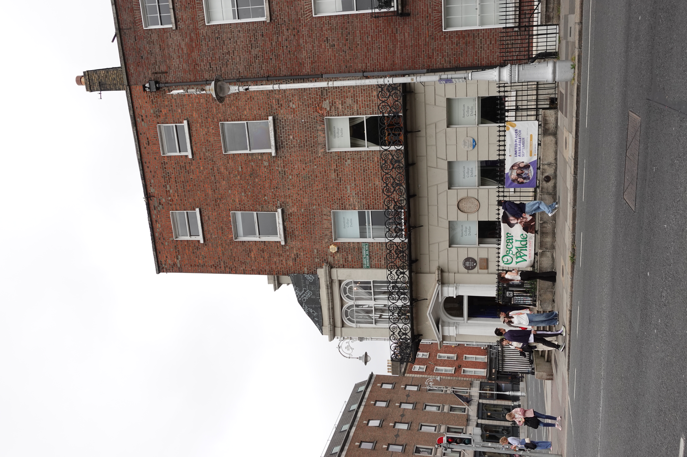
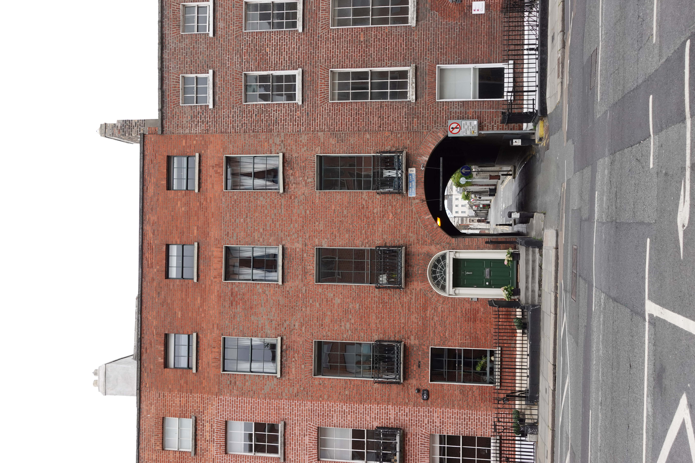
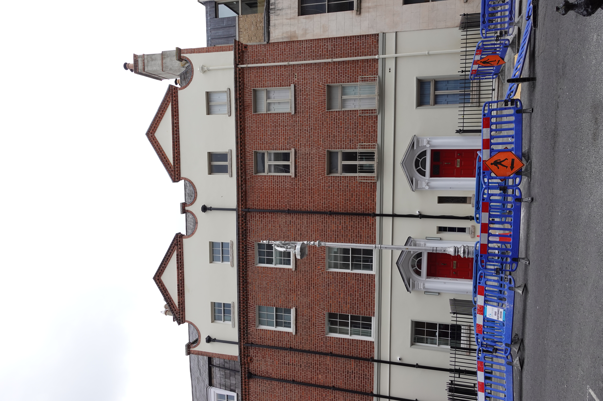
Before this turns into around the world in 80 office markets, let's shift to another building typology which has demonstrated a similar level of flexibility: the Victorian townhouse. The economic slump saw the rise of Dublin's notorious inner city slums and the tenements. Georgian town houses were subdivided into single rooms which housed entire families, reflecting some of the worst urban poverty in Western Europe. This was accompanied by the flight of the middle classes to new suburban townships like Rathmines and Rathgar to the south and Clontarf to the north. These places had lower property taxes, better sanitation, and their own municipal governments. They subsequently flourished with rapid speculative building, in particular for large villas built in vibrant red brick with ornate detailing and large bay windows.
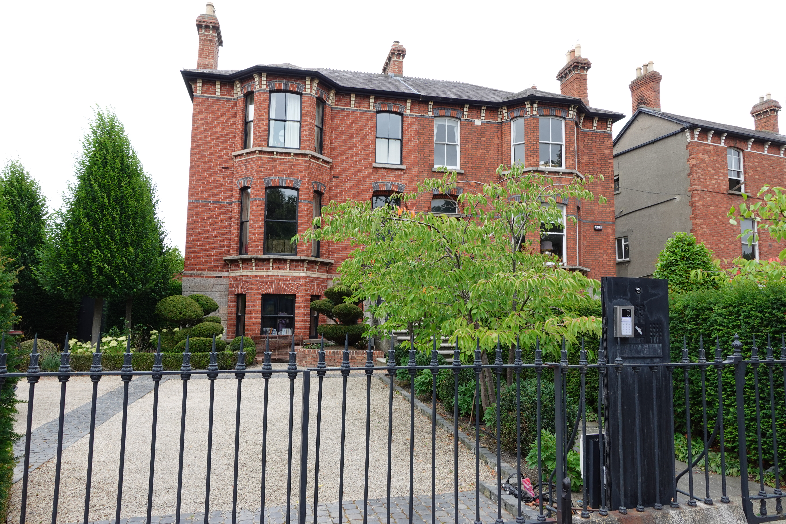
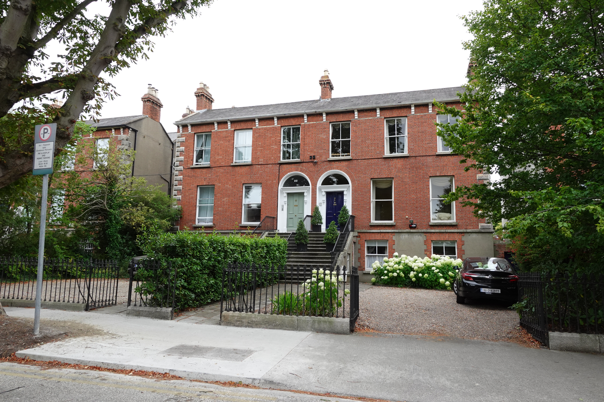
However, these buildings would also go on to suffer under the burden of economic hardship. The 1930 Local Government (Dublin) Act incorporated many of these former areas into the city, causing them to lose their tax advantages. As families moved further South or into more modern accommodation, the vast multi-storey villas quickly became unaffordable and impractical for families. From the 1960s onwards they would also be cheaply subdivided into bedsits and become part of what would come to be known as the 'flatland' era. These would provide cheap accommodation to a wide variety of residents, from students and workers to international immigrants and people from rural areas, to establish a more bohemian community.
But the neighbourhood would come full circle through gentrification in the 21st century. A 2013 law banned bedsits in Ireland, putting an abrupt end to this era of cheap segmented accommodation. As Dublin has prospered since the 2008 crash, the townhouses have been transformed back into grand family houses for the well to do. Brian O'Driscoll, for example, moved to a €1.8 million home in Rathmines.
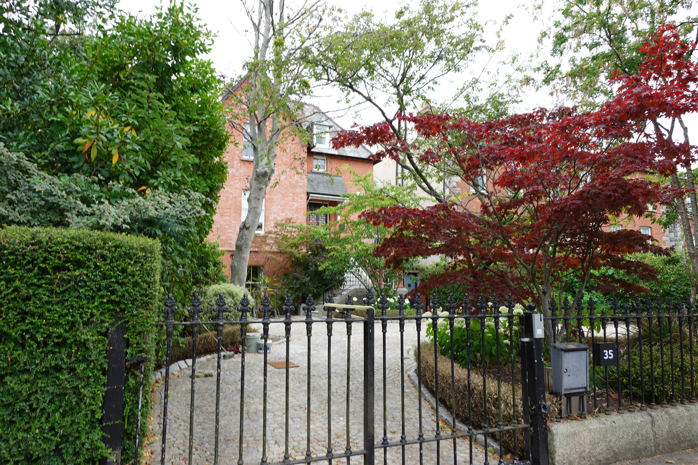
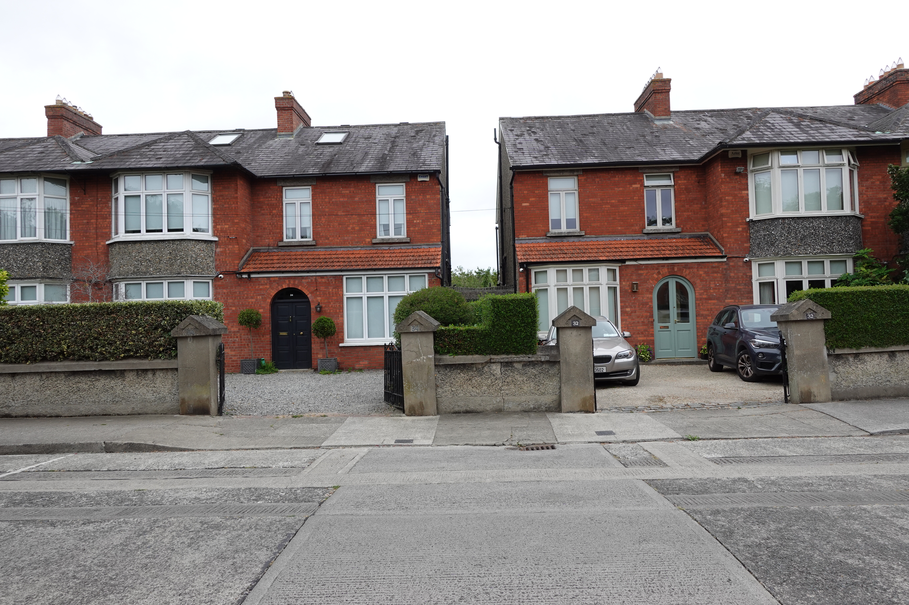
I'm struck by the similarity this has to neighbourhoods like Notting Hill in London. As Rowan Moore highlights, the homes built there were for originally for large and prosperous families before being carved up into flats, descending into slum tenements, then accommodating bohemians, immigrants and students, becoming respectable again, were undivided back into houses and are now the properties of some of the richest people in Europe. Such buildings have a flexibility in their spaces, as well as a compelling attraction through detailing which isn't too serious. They look like what many people would traditionally think of or draw, at least in the UK, should they be asked to visualise a house.
Sins of the past and the way forward
While Dublin's building heritage has had a rejuvenation in recent years, there are darker sides to its architectural legacies that undermine these charming stories and underpin the current plethora of crises. The Celtic tiger era saw an unregulated expansion of the construction industry. The Building Control Act of 1990 introduced a system of privatised self-certification. That's absolutely nuts. Developers essentially hired their own assigned certifiers to sign off on their buildings. Only 10-15% of sites were inspected by local authority planning enforcement and a lot of buildings were constructed without any planning permission or building control.
A government review in 2022 estimated that up to 100,000 flats built between 1991 and 2013, or 80% of all those built, had either fire-safety defects, water ingress issues, or structural safety problems. Or a combination of the three. Again, that's absolutely nuts. The defects were evident in missing fire-stopping barriers, improper compartmentation between flats, leaking flat roofs, unsealed balconies and poorly fixed cladding. Homes began to rot and put their inhabitants at mortal risk.
The catalyst for change was Priory Hall, a block of 187 apartments built in the 2000s in north Dublin that came to epitomise the construction scandal. The block was found to have severe fire hazards as residents were forced to evacuate in 2011. Until a deal was reached in 2013 where the state stepped in, residents had to continue paying their mortgage while living elsewhere before it was completely stripped and rebuilt. Other examples would follow, for example the Beacon South Quarter development in Sandyford where remediation works worth an estimated €10 million in 2017, or up to €15,000 per apartment, were required to address fire safety issues.
The problems with this era of construction go, unfortunately, beyond this. The pyrite scandal is another black mark on the country's legacies of housing development. This was where quarry operators crushed rock with high concentrations of pyrite, a mineral otherwise known as fool's gold, to use as hardcore aggregate infill. I had no idea what that meant either, but learned that it is the packed stone layer laid underneath concrete ground floors. When it is exposed to moisture and oxygen, it oxidises and expands. The swelling causes the concrete to 'heave' and crack, damaging walls, door frames, and the structural integrity of the house. Not good at all. This impacted mostly areas of Dublin, Meath, and Kildare, impacting around 20,000 homes. A similar scandal was present in western counties like Mayo and Donegal due to the presence of mica, another mineral, in concrete blocks. This 'defective block crisis' had similar impacts but in the walls themselves, resulting in swelling, cracking, and a loss of structural integrity.
These scandals exemplify the profound problems that can arise from careless application of de-regulation, as well as the cost to the state to fix them and the reputation of developers to be trusted to build safe homes. In 2014 new regulations for building control were introduced which mandated assigned certifiers and formal chains of liability. This killed the system of self-certification and introduced clearly much needed building standards, yet clearly the impacts of shoddy construction would be felt long after as the government was forced to fix the damage through remediation schemes.
In 2014 the government launched the Pyrite Remediation Scheme to cover 100% of the cost for testing and repair of affected aggregate and concrete floors, which is estimated to cost around €230m. This laid the political and legislative groundwork for further schemes, like the Defective Concrete Blocks Grant Scheme from 2020 to cover costs for the blocks impacted by mica. This was supported by the introduction of the Defective Concrete Products Levy, a 5% tax applied to the first supply of certain concrete products as of September 2023. In the same year a different remediation scheme was announced to fix up to 100,000 homes built between 1991 and 2013, the average cost of which was estimated to be €25,000 per home and totalling up to €2.5bn.
I'll stop blasting you with remediation policies, but you get the picture. Things went very wrong, with the scandals comparable to the cladding problems in the UK and the tragedy of Grenfell tower fire. Indeed, Kingspan, the Irish insulation company which provided 5% of the insulation material used in the tower refurbishment, was heavily criticised in the Grenfell inquiry for its 'complete disregard for fire safety' and 'engaging in deeply entrenched and persistent dishonesty...in pursuit of commercial gain.' The same tragic loss of life has not transpired in Ireland, but it very much could have, and now a significant amount of money has to be spent to fix the problems. I understand the frustration many developers around the world have with today's red tape, and criticisms are valid against both the reach, application, and timings of such regulation. At the same time, these instances offer a stark reminder of the very real consequences of careless deregulation.
I wouldn't want to end on such a downbeat note as, thankfully, the construction industry has learned a lot from these prior failings. They are also paramount to creating a new era of Irish development that is required to tackle its fiendish housing situation. But new homes in Dublin today offer a stark departure from the grand Georgian or Victorian developments of the past. Minimum density thresholds are now targeted for any new developments, ranging from 100-250+ units per hectare in city centres and the Dublin canal belt, to 40-80 in suburban areas. This creates a slightly jarring dichotomy between the clustered and more vertical new buildings with the sprawling low-rise homes from a completely different era of urban planning. This is notably around the new developments of the docklands, where the tech companies are located and tall residential blocks have been erected. These ultra-dense developments stand out against the 1960s bungalows and cottages of East Wall just to the north, where fragmented ownership is likely to lock in this low-slung mid-century suburbia long into the future. At the risk of sounding cliché, it truly is a divide between the Dublin of the past and the future. And if the housing crisis persists, as it is likely to for the foreseeable future, these stark contrasts are likely to pop up across the city as every inch of available space is squeezed to maximise the creation of much needed new homes.

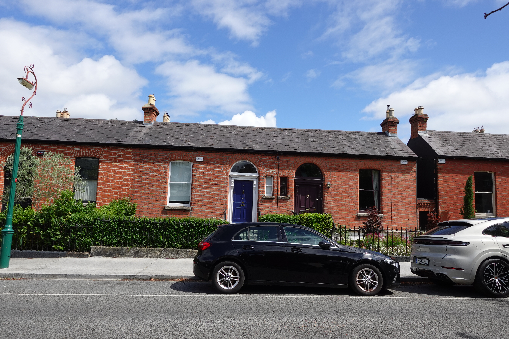
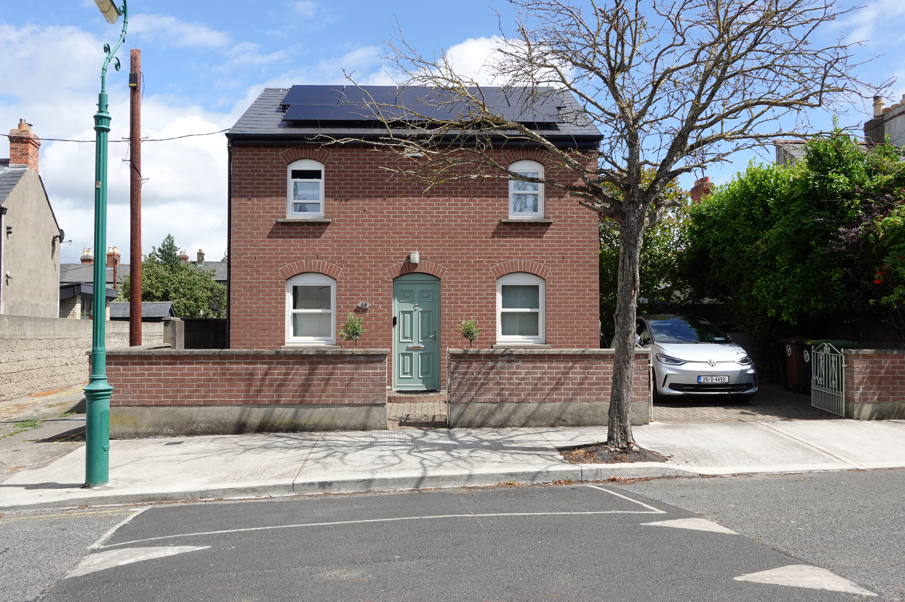

Final thoughts
As with families, all unhappy housing markets are unhappy in their own way. In these blogs I am always on the hunt for what makes markets unique, which can sometimes be difficult to pinpoint. Not so with Ireland. The country, and in particular Dublin, has some of the most bizarre set of circumstances at the root of its challenging housing market. The boom and bust and boom it has experienced demonstrates a momentum that appears far beyond what its relatively modest population would warrant. Indeed, the economic swings from Celtic Tiger to its tech and pharma windfall derive from economic logics with origins far beyond its borders.
Clearly this has tangible impacts on its native population and the way they house themselves, for better and worse. It is driving development, but it is also keeping average earners in a bind, with young people unable to access home ownership in the same way generations before them could. This is a problem in many places, but it feels particularly acute here, and the way the government has tried to alleviate it has not exactly been a shining example for other places (including the UK) to follow.
I think especially of the future: what will the next potential bust look like? The Irish government is clearly saving for the rainy day when this windfall will recede, establishing sovereign wealth funds that will theoretically soften the blow. But what are the consequences when house prices are no longer buoyed by high demand supported with tech salaries? Will there be a large correction? It is a long-term question, but one that hangs over the country with an undeniable menace.

Disclaimer: These posts reflect my best understanding of each market. They are based on conversations with locals and experts, academic articles, and other online publications while trying not to get bogged down in too much detail and keep things understandable and perhaps a little entertaining. If there is anything that is factually wrong or out of date, things that I've misunderstood, or extra nuances you think it important to note, please do get in touch!